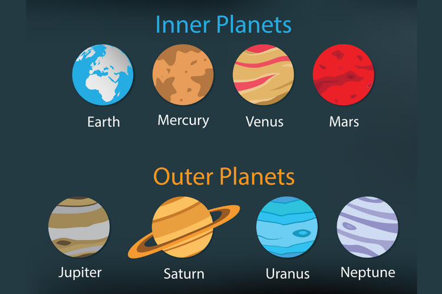

ASTRONOMY 101
Planet

Apa Itu Planet?
Planet adalah benda langit yang mengorbit sebuah bintang dan memiliki bentuk yang hampir bulat karena gravitasinya sendiri.
Dalam Tata Surya, terdapat delapan planet yang mengorbit Matahari. Setiap planet memiliki ukuran, massa, komposisi, atmosfer, temperatur, dan karakteristik yang berbeda.
Planet tidak menghasilkan cahaya sendiri seperti bintang. Planet dapat terlihat karena memantulkan cahaya dari bintang yang menjadi pusat orbitnya. Dalam Tata Surya, cahaya tersebut berasal dari Matahari.
Planet Dalam
Planet dalam Tata Surya terdiri dari Merkurius, Venus, Bumi, dan Mars. Planet-planet tersebut berada lebih dekat dengan Matahari dan memiliki permukaan yang padat dan berbatu.
Keempat planet ini juga memiliki ukuran yang relatif lebih kecil dibandingkan planet luar. Karena jaraknya lebih dekat dengan Matahari, planet dalam memiliki periode orbit yang lebih pendek.
Planet Luar
Planet luar terdiri dari Jupiter, Saturnus, Uranus, dan Neptunus. Planet-planet ini berada lebih jauh dari Matahari dan memiliki ukuran yang jauh lebih besar dibandingkan planet dalam.
Jupiter dan Saturnus dikenal sebagai raksasa gas, sedangkan Uranus dan Neptunus termasuk raksasa es. Planet-planet luar juga memiliki banyak satelit alami dan sistem cincin dengan karakteristik yang berbeda-beda.

Mengenal Delapan Planet
Merkurius
Merkurius adalah planet yang paling dekat dengan Matahari dan merupakan planet terkecil di Tata Surya. Permukaannya dipenuhi kawah akibat tumbukan dengan berbagai benda langit.
Merkurius tidak memiliki atmosfer tebal seperti Bumi. Karena jaraknya sangat dekat dengan Matahari, temperatur di permukaannya dapat mengalami perubahan yang sangat besar antara siang dan malam.
Venus
Venus adalah planet kedua dari Matahari dan memiliki ukuran yang hampir mirip dengan Bumi. Namun, kondisi lingkungan Venus sangat berbeda dari planet kita.
Venus memiliki atmosfer yang sangat tebal dan didominasi oleh karbon dioksida. Atmosfer tersebut menyebabkan efek rumah kaca yang sangat kuat sehingga Venus menjadi planet terpanas di Tata Surya.
Bumi
Bumi adalah planet ketiga dari Matahari dan merupakan tempat kita hidup. Bumi memiliki air dalam bentuk cair dalam jumlah yang besar serta atmosfer yang mendukung kehidupan.
Bumi juga memiliki satu satelit alami, yaitu Bulan. Hingga saat ini, Bumi merupakan satu-satunya planet yang diketahui memiliki kehidupan.
Mars
Mars adalah planet keempat dari Matahari dan sering disebut sebagai Planet Merah. Warna kemerahannya berasal dari mineral besi yang mengalami oksidasi pada permukaan Mars.
Mars memiliki atmosfer yang jauh lebih tipis dibandingkan Bumi. Planet ini juga memiliki gunung, lembah, kawah, serta lapisan es di bagian kutubnya.
Jupiter
Jupiter adalah planet kelima dari Matahari dan merupakan planet terbesar di Tata Surya. Jupiter sebagian besar tersusun dari hidrogen dan helium.
Jupiter memiliki atmosfer dengan pola awan yang kompleks. Salah satu fitur yang paling terkenal adalah Great Red Spot, yaitu badai besar yang telah diamati dalam waktu yang sangat lama.
Saturnus
Saturnus adalah planet keenam dari Matahari dan terkenal karena sistem cincinnya yang sangat jelas. Cincin Saturnus tersusun dari banyak partikel es, debu, dan material berbatu.
Saturnus juga memiliki banyak satelit alami. Salah satu satelitnya yang terkenal adalah Titan, yang memiliki atmosfer tebal dan merupakan salah satu objek menarik untuk dipelajari dalam Tata Surya.
Uranus
Uranus adalah planet ketujuh dari Matahari. Planet ini memiliki warna biru kehijauan yang berkaitan dengan keberadaan metana di atmosfernya.
Salah satu karakteristik unik Uranus adalah kemiringan sumbu rotasinya yang sangat besar. Akibatnya, Uranus tampak seperti berotasi dalam posisi yang sangat miring dibandingkan dengan sebagian besar planet lainnya.
Neptunus
Neptunus adalah planet kedelapan dan merupakan planet yang paling jauh dari Matahari. Planet ini memiliki warna biru yang berkaitan dengan kandungan metana di atmosfernya.
Neptunus memiliki atmosfer yang sangat dinamis dan dikenal memiliki angin yang sangat kuat. Karena jaraknya yang sangat jauh dari Matahari, Neptunus membutuhkan waktu yang sangat lama untuk menyelesaikan satu kali orbit.
Perbedaan Planet Dalam dan Planet Luar
Planet dalam memiliki permukaan padat dan berbatu serta berada lebih dekat dengan Matahari. Planet-planet tersebut adalah Merkurius, Venus, Bumi, dan Mars.
Sebaliknya, planet luar memiliki ukuran yang jauh lebih besar dan berada lebih jauh dari Matahari. Jupiter dan Saturnus merupakan raksasa gas, sedangkan Uranus dan Neptunus merupakan raksasa es.
Urutan Planet dalam Tata Surya
Jika diurutkan berdasarkan jaraknya dari Matahari, susunan planet dalam Tata Surya adalah Merkurius, Venus, Bumi, Mars, Jupiter, Saturnus, Uranus, dan Neptunus.
Urutan tersebut menunjukkan bahwa Merkurius merupakan planet yang paling dekat dengan Matahari, sedangkan Neptunus merupakan planet yang paling jauh dari Matahari di antara delapan planet utama.
Bagaimana Planet Terbentuk?
Planet terbentuk dari material yang tersisa setelah pembentukan sebuah bintang. Dalam Tata Surya, gas dan debu di sekitar Matahari muda secara perlahan berkumpul akibat gaya gravitasi.
Material tersebut saling bertabrakan dan bergabung sehingga membentuk benda yang semakin besar. Proses ini berlangsung dalam waktu yang sangat panjang hingga akhirnya terbentuk planet dan berbagai benda langit lainnya.
Bagaimana dengan Pluto?
Pluto pernah dianggap sebagai planet kesembilan dalam Tata Surya. Namun, Pluto sekarang diklasifikasikan sebagai planet katai atau dwarf planet.
Pluto tetap merupakan objek penting dalam Tata Surya dan berada di wilayah yang sangat jauh dari Matahari, yaitu kawasan yang dikenal sebagai Sabuk Kuiper.
🪐 FUN FACT
Jupiter merupakan planet terbesar di Tata Surya, sedangkan Merkurius merupakan planet terkecil.